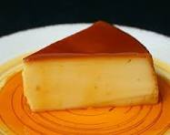

Exquisito postre para degustar despues del platillo fuerte

Ingredientes--
3/4 de azucar refinada
1 Lata de leche condensada
1 Lata de leche evaporada
1 Paquete de queso crema a temperatura ambiente
5 Huevos
1 Cucharada de esencia de vainilla
Proceso
1.Horno precalentado a 180 °C
Vierte el azúcar en una flanera y calienta a fuego medio para que se forme el caramelo; ladea con cuidado el molde para cubrir la superficie y las paredes.
Licúa la Leche Condensada LA LECHERA® con la Leche Evaporada CARNATION® CLAVEL®, el queso crema, los huevos y la esencia de vainilla. Vierte la preparación en la flanera y tapa con papel aluminio sellando las orillas. Coloca en un recipiente y cocina a baño María en el horno a 180 °C durante 1 1/2 horas.
Sirve
Retira del fuego y deja enfriar por completo; desmolda y sirve.